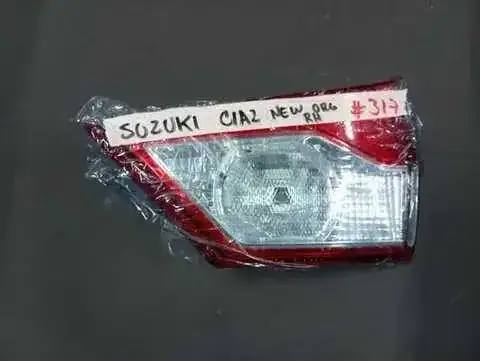
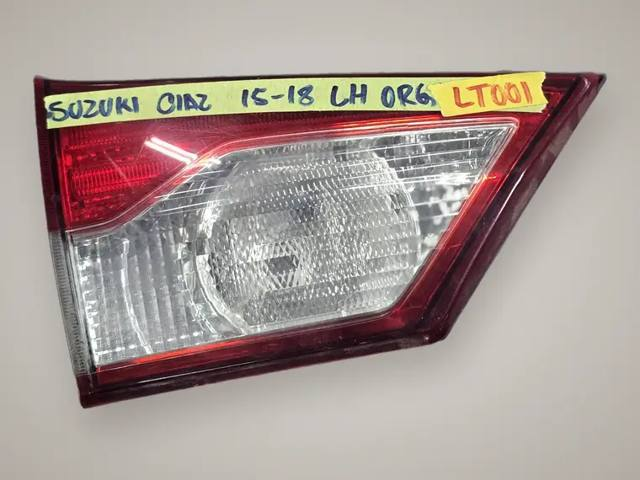
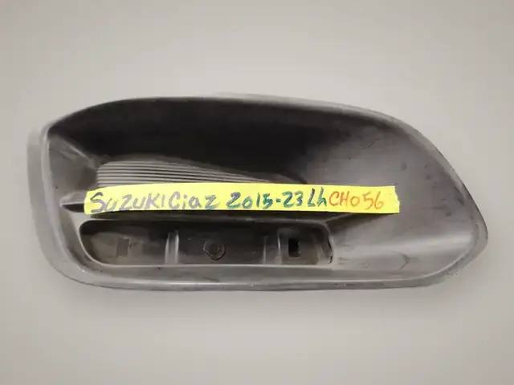
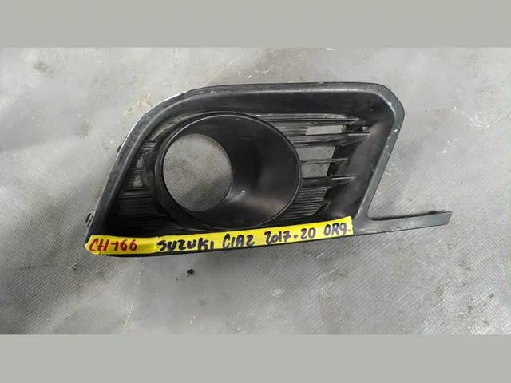

Piezas de carrocería para Suzuki Ciaz
8 piezas disponibles hoy para Suzuki Ciaz, cada una con su foto y su código: lámparas traseras (3), covers de halógena (3), parrillas (1), retrovisores (1). Dinos el año de tu carro y te confirmamos si le sirve.
- Garantía de 3 días
- Foto real de cada pieza
- Efectivo, Yappy o ACH
- Lunes a sábado, 8:00 a. m. a 5:00 p. m.
Lámparas traseras para Suzuki Ciaz 3

317Ciaz2015-20 · lado derecho · original nuevo 323Ciaz2015 · lado derecho · original
323Ciaz2015 · lado derecho · original
LT001Ciaz2015-18 · lado izquierdo · originalCovers de halógena para Suzuki Ciaz 3

CH056Ciaz2015-23 · lado izquierdo CH057Ciaz2015-23 · lado izquierdo
CH057Ciaz2015-23 · lado izquierdo
CH166Ciaz2017-20 · lado izquierdo · original 509Ciaz
509Ciaz RV001Ciaz
RV001Ciaz